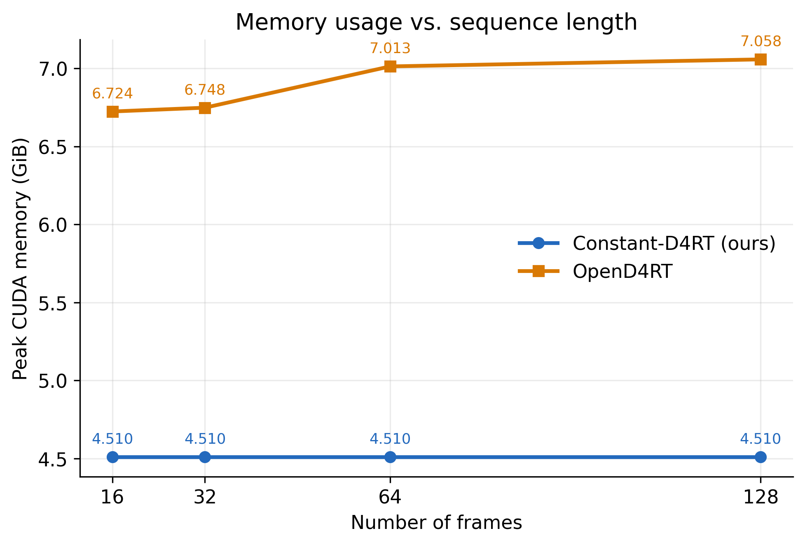
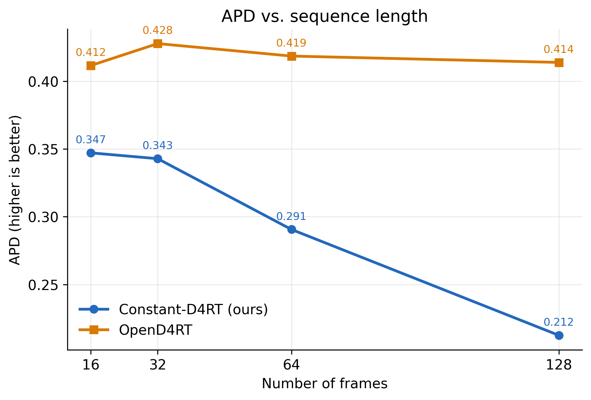
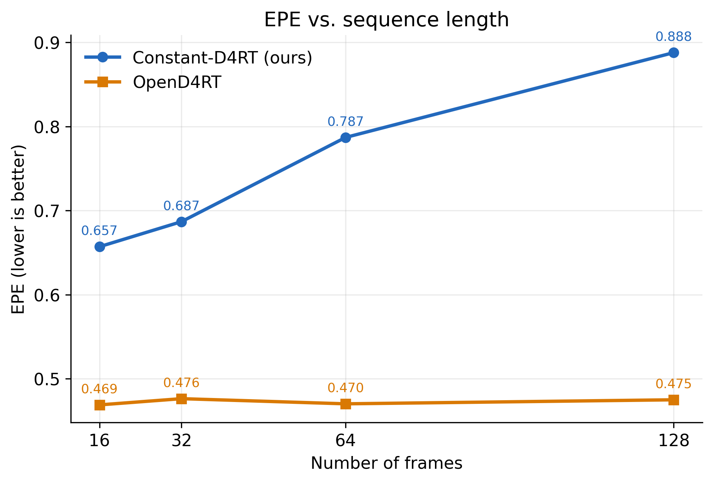

Constant-D4RT vs. OpenD4RT：设计、实验与当前进度
更新日期：2026-08-09
当前实现：Constant-D4RT v2（固定状态的 recurrent adapter）
对比基线：OpenD4RT 发布实现与OpenD4RT_48CLIP_9Mix_NoCropAUGcheckpoint，不是 D4RT 论文原始闭源模型。
结论先行
这个项目的目标不是给 OpenD4RT 增加一个普通的 temporal cache，而是把它从“整段视频一次性编码”的 clip model 改造成因果、可持续更新、峰值工作显存不随视频长度增长的 4D tracking model。
当前 v2 已经完成了这条路线的第一个闭环：9Mix 数据对齐、3 GPU / 30,000 samples 训练、WorldTrack held-out 公平对比和 16/32/64/128 帧双模型 scaling curve 均已跑完。固定 512 个 scene-state tokens、最多 256 个 active tracks 和 256 的 query chunk 时，实测 recurrent working state 与 CUDA peak memory 在 16–128 帧保持不变；完整 held-out 对比中峰值显存从 OpenD4RT 的 7.014 GiB 降到 4.624 GiB，降低 34.1%。
模型质量还没有追平：同一完整 held-out 协议下，Constant-D4RT 的 APD 为 0.4245，OpenD4RT 为 0.6950；EPE 分别为 0.7314 和 0.3211。执行路径优化后，batch-8 causal throughput mode 达到 165.84 FPS，OpenD4RT 为 65.96 FPS，即 2.51×；峰值显存仍为 4.624 GiB。因此目前最准确的项目状态是：bounded-memory 和 throughput objective 已成立，accuracy/long-horizon retention 是主要研究问题。

1. OpenD4RT 的设计
OpenD4RT 是 feed-forward、clip-level 的统一 4D reconstruction/tracking model：
video I[0:T]
│
▼
ViT-g video encoder ───────────────► clip memory M[0:T]
▲
query (u, v, t_src, t_tgt, t_cam) │ cross-attention
│ │
├─ UV Fourier features │
├─ source-frame local RGB patch │
└─ learned discrete time embeddings ─► independent query decoder
│
▼
xyz / uv / visibility / displacement /
normal / confidence
它有两个非常重要的优点：
- 视频 encoder 同时看到整个 clip，时空证据完整，适合任意 source/target/camera-time query。
- independent-query decoder 把 dense reconstruction 和 sparse tracking 统一成同一种 query API：
(u, v, t_src, t_tgt, t_cam)。
代价是它没有跨帧持久状态。输入前缀变长时，需要把整个 clip 作为输入重新编码，并让 query 访问 clip-level memory；source RGB patch 也从原视频中提取。实现中的 max_tokens 会限制 encoder token 数，因此不能简单声称显存会无限线性增长，但模型语义和执行方式仍然是长度相关的 offline clip inference，而不是可以无限向前更新的 streaming state machine。
2. 我们当前的 Constant-D4RT v2
当前实现保留 OpenD4RT 的 query/output 语义，把 full-clip scene memory 换成固定大小的 recurrent scene state：
┌──────────────────────────────────────┐
previous frame I[t-1] ─┐ │ │
├─► frozen 2-frame OpenD4RT encoder ─► O_t│
current frame I[t] ────┘ │ │ │
│ ▼ │
fixed scene state S[t-1] ├────────► gated cross-attn updater ─► S[t]
│ │
source (u,v,t_src) ──────┴─► fixed UV + RGB identity token │
│
(identity, t_src, t_tgt, t_cam, relative time) ─► query adapter │
▼
frozen OpenD4RT decoder + trainable heads
│
▼
4D outputs
核心递推是：
[ O_t = E(I_{t-1}, I_t), \qquad S_t = U(S_{t-1}, O_t), \qquad |S_t| = N_s. ]
在当前 v2 run 中，N_s = 512。updater 先把 1280-d state/observation tokens 投影到 256-d，用 8-head cross-attention 得到更新量，再通过 learned sigmoid gate 写回固定状态，并接一个 gated FFN residual。整个 OpenD4RT base encoder/decoder 冻结；训练的部分包括 initial state、state updater、continuous relative-time projector、zero-initialized query adapter，以及从 OpenD4RT heads 复制出来的 task heads，共 3,781,121 个参数。
2.1 Persistent point identity
OpenD4RT 在 decode 时仍可从 t_src 帧读取 source patch。Constant-D4RT 在 track 注册时只读取一次 source pixel 的 UV Fourier feature 和局部 RGB patch，将二者压缩成固定 identity token。之后旧 RGB frame 可以释放，query 使用 identity token 而不是回看原始 source frame。
训练时 9Mix query 的 t_src 不一定相同，因此实现会从各自 source frame 捕获 identity；当前 WorldTrack 协议只评测 first-frame visible queries，所以在线评测统一在 frame 0 捕获。当前 active identity table 有固定上限，但还没有 production-grade 的 track eviction / re-identification / lifecycle manager。
2.2 Long-time query encoding
OpenD4RT 的 t_src/t_tgt/t_cam 是 learned discrete embeddings，训练 checkpoint 的参考 horizon 为 48 帧。我们保留并 clamp 这些 pretrained embeddings，同时叠加 signed log relative-time Fourier residual：
[ \Delta t = t_{tgt} - t_{src}, \qquad x = \operatorname{sign}(\Delta t) \frac{\log(1+|\Delta t|)}{\log(48)}. ]
这使超过原始 clip horizon 的 query 和 retrospective query 至少能获得连续、带方向的时间表示，而不只是在第 47 帧 embedding 上饱和。
2.3 Training objectives
v2 的每个 16-frame 训练 clip 因果地逐帧更新 state，并联合优化四类目标：
revisit supervision：读完整个 clip 后，从 final state 回答全部 canonical D4RT queries。causal supervision：每条 query 在 source、target、camera 三个时刻都已被观察到的第一个 state 上回答一次，匹配在线推理。OpenD4RT output distillation：对 full-clip OpenD4RT teacher 的六个 output heads 做 Smooth-L1 distillation。query preservation：加入最新一帧前后，对完全属于旧历史的xyz/uv/visibilityquery 约束输出不要无故漂移。
实际权重为 revisit 1.0 + causal 1.0 + teacher 0.5 + preservation 0.05，每 4 个 recurrent steps 做一次 TBPTT detach。
2.4 Strict streaming 与 throughput mode
每个 observation O_t = E(I_{t-1}, I_t) 彼此独立于 recurrent state，因此可以先将固定数量的 observation pairs 合成 GPU batch，再严格按 t 的顺序执行 S_{t-1} → S_t 和 query decoding。当前 evaluator 提供两种执行方式：
--observation-batch-size 1：minimum-latency strict streaming，每来一帧立即编码并输出。--observation-batch-size 8：默认 throughput mode，最多缓存 8 帧 observation；encoder batched 执行，但 state update 和每帧输出仍然因果，不使用未来 observation。
batch size 是固定常数，所以 GPU memory 对视频长度 T 仍为 O(1)；代价是 throughput mode 最多增加 8 帧等待延迟。实现还使用 pinned host staging、non-blocking H2D/D2H copies，并把 update-gate 统计保留在 GPU 上，消除了旧 evaluator 每帧 .item() / .cpu().numpy() 造成的同步。
3. 两种设计的直接对比
| 维度 | OpenD4RT 发布版 | Constant-D4RT v2（当前） |
|---|---|---|
| 执行方式 | 整段 clip feed-forward | 逐帧 causal recurrent update |
| Scene representation | 当前完整 clip 的 encoder memory | 固定 512 × 1280 scene-state tokens |
| 新帧处理 | 增长前缀需重新进行 clip inference | 用 (I[t-1], I[t]) 更新 S[t-1] → S[t]；可固定 micro-batch observations |
| Source identity | decode 时从 clip 中读取 UV/local RGB | 注册时捕获一次 fixed identity token |
| Query API | (u,v,t_src,t_tgt,t_cam) |
保持相同 API 与 output heads |
| 时间编码 | learned discrete embeddings | 原 embedding + continuous signed relative time |
| 历史保真 | full-clip evidence，信息完整 | 历史被压缩到固定 state，可能遗忘/干扰 |
| Active tracks | query 数可按 chunk 扩展 | 固定容量 identity table；当前无 eviction |
| 坐标系 | query 选择 t_cam |
WorldTrack prototype 以 frame/camera 0 为 world reference；未显式维护 camera history |
| Peak working memory | 随 clip/token workload 变化 | 固定 state、track cap、chunk 下不随 T 变化 |
| 总计算量 | 一次 clip inference | 每帧一次 two-frame encode + state update；总计算仍随 T 线性增长 |
| 当前质量 | 强 accuracy baseline | memory/throughput 已达标，accuracy 未达标 |
这里的 “constant memory” 有严格边界：它指 固定 scene-state token 数、active-track cap、query chunk 和分辨率时的 GPU peak working memory 对视频长度 T 有界。如果增大 track cap、query chunk、分辨率或 state tokens，显存仍会增加；当前数据加载器也可能把完整 .npz 放在 host memory，训练时还会跑 full-clip teacher。因此这不是“所有系统内存恒定”，也不意味着有限 state 能无损记住无限历史。
4. 数据与训练进度
4.1 9Mix 对齐
当前训练使用与 OpenD4RT configs/train_effective.yaml 对齐的九个来源：
- PointOdyssey
- Dynamic Replica
- Kubric Full
- TartanAir
- Virtual KITTI 2
- ScanNet
- BlendedMVS
- CO3D
- MVS-Synth
上游配置 provenance 已固定：OpenD4RT upstream head bead824a40f2d719246469aed3acad101287a201，配置最后修改 commit ac212e37829222118862b5f4324ec8b6e02db033，本地 train_effective.yaml 与上游文件为 exact byte match，SHA256 为 3d8a050159b37744106027020b465bfa43b14a1a5a996af1ab9aaf9c2387d275。
九个数据源都已完成本地 layout validation 和真实 loader sample validation。30,000 samples 的 source sampling audit 通过，最大 mixture probability 偏差为 0.00351，低于 0.02 阈值。WorldTrack 没有参与训练，只用于 held-out evaluation。
4.2 完成的 v2 run
| 项目 | 值 |
|---|---|
| Distributed steps | 10,000 |
| Global batch | 3（3 GPU × 1） |
| Seen samples | 30,000 |
| Training clip / queries | 16 frames / 512 queries |
| State | 512 tokens × 1280 dims |
| Low-rank update | 256 dims, 8 heads |
| Query chunk | 256 |
| TBPTT | every 4 frames |
| Precision | BF16 |
| LR | 2e-4 → 2e-5, 167-step warmup |
| Trainable parameters | 3,781,121 |
| Completion verification | PASS |
训练 base/teacher 使用发布的 OpenD4RT_48CLIP_9Mix_NoCropAUG。为保证比较可复核，model config SHA256 为 2d521a03c16382a7436a91d1ddd1ba692c6d993c9a5785cf34ab759e3eac83b8，checkpoint SHA256 为 65936f72eb902f9a3629e25b2888e8cc2ebf87a89bee7103fe94313fb53dd179。
5. WorldTrack 对比结果
5.1 完整 held-out comparison
协议：四个 WorldTrack subsets 各自按排序后 index % 5 == 0 切 held-out；共 40 sequences、9,218 queries；每段取前 64 帧，最多 256 tracks，query chunk 256，BF16，同一 NVIDIA B200，同一 OpenD4RT base artifacts。Constant-D4RT 使用固定 observation batch 8；OpenD4RT 使用其 offline clip batching。
APD 是 global median-scale alignment 后，在 0.1/0.3/0.5/1.0 四个 metric thresholds 内的点比例均值，越高越好；EPE 是同一 alignment 后的平均 3D endpoint error，越低越好。
| Subset | APD ours / OpenD4RT ↑ | EPE ours / OpenD4RT ↓ | FPS ours / OpenD4RT ↑ | Peak GiB ours / OpenD4RT ↓ |
|---|---|---|---|---|
adt_mini |
0.5236 / 0.7229 | 0.5144 / 0.2575 | 160.30 / 64.87 | 4.624 / 7.014 |
po_mini |
0.2265 / 0.5782 | 1.1897 / 0.4224 | 175.76 / 66.00 | 4.624 / 7.014 |
pstudio_mini |
0.5125 / 0.7682 | 0.4643 / 0.1998 | 165.53 / 68.06 | 4.624 / 7.014 |
ds_mini |
0.4485 / 0.7198 | 0.6837 / 0.3748 | 175.31 / 66.87 | 4.624 / 7.014 |
| Overall | 0.4245 / 0.6950 | 0.7314 / 0.3211 | 165.84 / 65.96 | 4.624 / 7.014 |
这里 overall APD/EPE 按 query count 加权，FPS 按总帧数/总 runtime 计算。Constant-D4RT 的总 runtime 为 15.44 s，OpenD4RT 为 38.81 s；ours 是 2.514×，相对旧的 54.13 FPS recurrent path 提升约 3.06×。peak memory 仍降低 34.08%。
这个 speedup 依赖 batch-8 throughput mode，不能冒充 zero-buffer latency：strict batch-1 path 会更慢，但可以逐帧立即输出。batch-8 前后的 APD 差值为 -0.000009，EPE 差值为 +0.000346，来自 BF16 batched-kernel reduction order；没有修改 checkpoint、state transition 顺序或 query semantics。机器可读结果见 fps_optimized_64f_comparison.csv。
复现 optimized path：
python eval_recurrent_d4rt_worldtrack.py \
--mode recurrent \
--recurrent-ckpt output/recurrent_d4rt_v2_9mix_3gpu_30ksamples/latest.pt \
--output-dir output/eval_constant_d4rt_optimized \
--split heldout --num-frames 64 --max-tracks 256 \
--query-chunk-size 256 --observation-batch-size 8 --dtype bfloat16
把 --observation-batch-size 改为 1 即为 strict streaming latency mode。
5.2 16–128 帧同序列双模型 scaling
为了直接观察 horizon，两个模型都在 pstudio_mini/basketball_13.npz 上用同一组 100 tracks/queries 评测，其他条件为 BF16、query chunk 256、NVIDIA B200。这里保留最初的 strict batch-1 数据以隔离 horizon 对 memory/APD/EPE 的影响；它是一条 sequence 的 controlled scaling test，不替代上面的 batch-8 完整 held-out benchmark。
| Frames | Memory ours / OpenD4RT (GiB) ↓ | APD ours / OpenD4RT ↑ | EPE ours / OpenD4RT ↓ |
|---|---|---|---|
| 16 | 4.510 / 6.724 | 0.3472 / 0.4117 | 0.6570 / 0.4690 |
| 32 | 4.510 / 6.748 | 0.3429 / 0.4279 | 0.6868 / 0.4764 |
| 64 | 4.510 / 7.013 | 0.2906 / 0.4187 | 0.7869 / 0.4703 |
| 128 | 4.510 / 7.058 | 0.2124 / 0.4140 | 0.8877 / 0.4751 |
完整精度数值见 scaling_comparison.csv。



曲线说明两个事实：
- 显存：Constant-D4RT 的 peak 在四个 horizon 上完全相同，OpenD4RT 从
6.724增到7.058 GiB。另一个 256-track ADT memory audit 中，ours 的显式 bounded working state 为4.625 MiB、peak CUDA 为4.624 GiB，16/32/64/128 帧 range 都是0，验证通过。 - 精度：OpenD4RT 的 APD/EPE 在该序列随 horizon 基本稳定；ours 的 APD 下降、EPE 上升，说明固定状态存在明显的 long-horizon forgetting / interference。这正是下一阶段需要解决的核心，而不是再证明一次 memory curve。
6. 已完成的工程进度
- OpenD4RT model/checkpoint、WorldTrack evaluator 和 9Mix training configuration 已复现并固定 artifact hashes。
- 9Mix 九个数据源已全部就绪；为每个来源实现/修复 loader、layout validator、真实 sample validator、completion marker 和 bad-sample registry。
- 数据下载与 pack pipeline 支持校验、断点续跑和持久化恢复；CO3D pack 逐包验证，MVS-Synth recovery 已完成。
- 已实现 fixed-state
RecurrentD4RT、source-time-aware identity capture、relative-time residual、chunked query decode 和 gated updater。 - 已实现 causal + revisit + teacher distillation + preservation 的 v2 training loop，以及 DDP checkpoint/resume、config attestation 和 source sampling audit。
- 30,000-sample / 3-GPU v2 training 已完成，最终 checkpoint、定期 checkpoint、metrics 和 verification artifact 均已生成。
- 已完成 40-sequence held-out fair comparison、256-track recurrent memory scaling 和 PStudio 16/32/64/128 双模型 scaling。
- 已实现 pinned asynchronous staging 和 fixed-size causal observation micro-batching；完整 held-out throughput 从
54.13提升到165.84 FPS，并把speedup > 1加入 completion gate。 plot_scaling_curves.py会校验双方 protocol 是否一致，并输出独立/组合 PNG、PDF、CSV 与 metadata。
大体积 datasets、checkpoints 和原始 output/ 均按仓库策略忽略，不会 push；本页、绘图脚本和可查看的最终 PNG 会进入 Git。完整本地 run 位于：
output/recurrent_d4rt_v2_9mix_3gpu_30ksamples/
latest.pt
completion_verification.json
data_validation.json
source_sampling_audit.json
eval_heldout_64f_256tracks/comparison.json
memory_scaling/summary.json
scaling_compare_pstudio/{recurrent,d4rt}/frames_{16,32,64,128}/summary.json
plots/
7. 当前实现与最终 idea 的差距
最初的 constant-memory D4RT idea 提出 hierarchical scene state：static geometry、dynamic objects、camera trajectory、recent frames，并配合 track eviction 和 query-preservation training。当前 v2 只实现了最小可验证版本：一个 homogeneous token bank + fixed identity table。因此不能把 roadmap 当成已经实现的功能。
| 最终方向 | 当前状态 |
|---|---|
| Static / dynamic 分层 memory | 未实现；目前是单一 512-token state |
| Explicit camera trajectory state | 未实现；prototype 使用 frame 0 reference |
| Recent-frame ring buffer | 仅保留 previous/current 两帧，没有 multi-scale recent memory |
| Track lifecycle / eviction / re-ID | 未实现；评测直接限制 active tracks |
| Long-range query bank preservation | 只有 newest-step preservation loss |
| 16→32→64→128→256 curriculum | 当前只在 16-frame clip 训练 |
| State/token-level teacher distillation | 目前只有 output-level teacher distillation |
| Production streaming input | 模型 forward 可 streaming；dataset/eval I/O 仍可加载整段 NPZ |
8. 下一步建议
下一阶段应该围绕“固定预算下提升历史保真”，而不是扩大成长度相关 memory：
- 先做
512 vs 1024state-token、preservation/teacher weights、TBPTT horizon 的受控 ablation，确定问题是容量、优化还是 supervision。 - 增加 16→32→64→128 的训练 curriculum，并将 retrospective/revisit queries 明确覆盖到更早历史；当前只用 16-frame training 很难支持 128-frame retention。
- 将单一 state 拆成 static/dynamic/recent 三个固定配额，让静态几何低频更新、动态槽高频更新，减少新帧对全局历史的覆盖。
- 加入 camera-state tokens 或紧凑 pose history，减少所有变化都被迫写入同一 scene token bank。
- 在固定 identity budget 内实现 track admission/eviction/re-ID，并把 eviction 后 query consistency 纳入 loss。
- 继续优化 strict batch-1 latency path：CUDA Graph /
torch.compile、固定 staging ring，以及可复用的 per-frame encoder feature；当前2.51×是 throughput 结果，不代表单帧 latency 已最优。 - 保持两个固定 gate：完整 held-out WorldTrack quality gate + 同序列 16–128 scaling gate。任何架构变化必须同时报告 APD、EPE、FPS 和 peak memory。
9. 代码入口
src/model/recurrent_d4rt.py：fixed state、gated updater、identity capture、relative time 和 query decoding。train_recurrent_d4rt_9mix.py：9Mix v2 training、causal/revisit/distillation/preservation losses。eval_recurrent_d4rt_worldtrack.py：Constant-D4RT 与 OpenD4RT 的同协议 WorldTrack evaluation，以及 strict/batched causal execution。plot_scaling_curves.py：双模型 scaling curve 校验与绘图。scripts/run_recurrent_d4rt_9mix_3gpu.sh：3-GPU training entrypoint。scripts/run_recurrent_d4rt_full_pipeline.sh：data validation、training、evaluation 和 verification pipeline。scripts/verify_recurrent_d4rt_completion.py：完成状态与关键 artifact consistency check。docs/recurrent_d4rt_v1.md：早期 WorldTrack-only v1 prototype，仅用于历史参考，不代表当前 v2 结果。